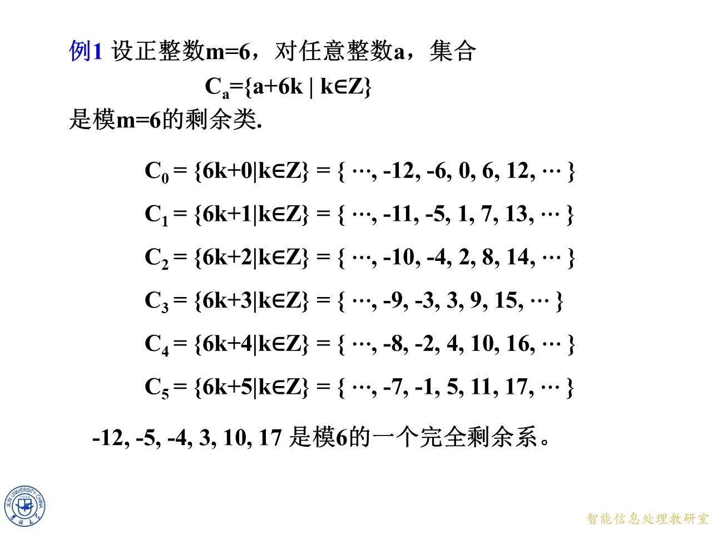
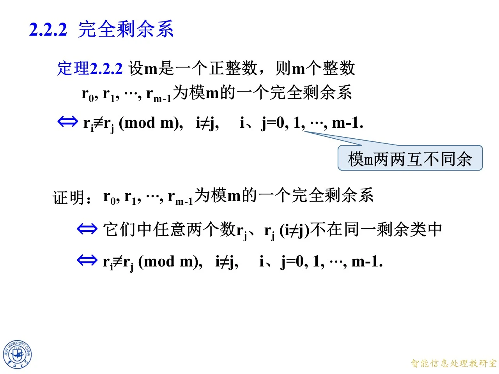

上一节建立了剩余类与完全剩余系的概念，这一节回答两个核心问题：给定 m 个整数，怎样不重不漏地验证它们构成模 m 的完全剩余系；以及把一个完全剩余系代入加常数、乘常数、先乘后加这样的式子后，得到的新集合还是不是完全剩余系。后者就是完全剩余系的"遍历定理"，它是下一节简化剩余系、乃至第二章后段一次同余方程理论的地基。课件用两套页码（9月18日授课 p.56–87 与另一版本 p.696–727）讲授完全相同的内容，本讲解以 p.56–87 逐页展开，文末附两套页码的对照页块。

课件原图 · 第一章第3节-原版 (1) · 第 690 页 查看前后已收录原页 → 定理 2.2.2：完全剩余系的判别准则
◆ p.56-59 ｜定理 2.2.2
这页给出完全剩余系最常用的等价刻画：设 m m m m m m r 0 , r 1 , … , r m − 1 r_0,r_1,\ldots,r_{m-1} r 0 , r 1 , … , r m − 1 m m m m m m
r i ≢ r j ( m o d m ) , i ≠ j , i , j = 0 , 1 , … , m − 1. r_i\not\equiv r_j\pmod m,\quad i\ne j,\quad i,j=0,1,\ldots,m-1. r i ≡ r j ( mod m ) , i = j , i , j = 0 , 1 , … , m − 1.
证明分两步，逻辑链是"完全剩余系 ⇔ \Leftrightarrow ⇔ ⇔ \Leftrightarrow ⇔ m m m m m m r i r_i r i r j r_j r j i ≠ j i\ne j i = j m m m m m m r i ≡ r j ( m o d m ) r_i\equiv r_j\pmod m r i ≡ r j ( mod m )
这个定理把判断问题变成纯粹的数数问题：一个候选集合要成为完全剩余系，只需数它有 m m m m m m m m m
拓展 （课件外补充）：这页课件同时展示了标准的代表元集合：最小非负完全剩余系 0 , 1 , … , m − 1 0,1,\ldots,m-1 0 , 1 , … , m − 1 1 , 2 , … , m 1,2,\ldots,m 1 , 2 , … , m − ( m − 1 ) , … , 0 -(m-1),\ldots,0 − ( m − 1 ) , … , 0 − m , … , − 1 -m,\ldots,-1 − m , … , − 1 m = 2 h + 1 m=2h+1 m = 2 h + 1 − h , … , h -h,\ldots,h − h , … , h m = 2 h m=2h m = 2 h − h , … , h − 1 -h,\ldots,h-1 − h , … , h − 1 − h + 1 , … , h -h+1,\ldots,h − h + 1 , … , h − h -h − h h h h 2 h 2h 2 h m m m
例 3（上）：平移 k + 1 k+1 k + 1 b b b
◆ p.60-62 ｜例 3 之 k + 1 k+1 k + 1 m = 10 m=10 m = 10 k k k 0 , 1 , 2 , 3 , 4 , 5 , 6 , 7 , 8 , 9 0,1,2,3,4,5,6,7,8,9 0 , 1 , 2 , 3 , 4 , 5 , 6 , 7 , 8 , 9 k + 1 k+1 k + 1 1 , 2 , 3 , 4 , 5 , 6 , 7 , 8 , 9 , 10 1,2,3,4,5,6,7,8,9,10 1 , 2 , 3 , 4 , 5 , 6 , 7 , 8 , 9 , 10
思路：共 10 个整数，个数够；再逐个取标准余数检验两两不同余。用定理 2.2.2，把每个数写成 1 , 2 , … , 10 1,2,\ldots,10 1 , 2 , … , 10
1 , 2 , 3 , 4 , 5 , 6 , 7 , 8 , 9 , 0. 1,2,3,4,5,6,7,8,9,0. 1 , 2 , 3 , 4 , 5 , 6 , 7 , 8 , 9 , 0.
十个余数恰好是 0 0 0 9 9 9 1 , 2 , … , 10 1,2,\ldots,10 1 , 2 , … , 10
◆ p.63-64 ｜单选题一与性质 (1)
单选题（1 分）：对任意整数模 m m m b b b k k k m m m k + b k+b k + b m m m
证明只需抓住"两两不同余"：任取完全剩余系中两个不同的数 k i ≠ k j ( m o d m ) k_i\ne k_j\pmod m k i = k j ( mod m ) b b b
k i + b ≢ k j + b ( m o d m ) . k_i+b\not\equiv k_j+b\pmod m. k i + b ≡ k j + b ( mod m ) .
反证更直白：若 k i + b ≡ k j + b ( m o d m ) k_i+b\equiv k_j+b\pmod m k i + b ≡ k j + b ( mod m ) b b b k i ≡ k j ( m o d m ) k_i\equiv k_j\pmod m k i ≡ k j ( mod m ) k + b k+b k + b m m m
例 3（下）：数乘 3 k 3k 3 k 2 k 2k 2 k a a a
◆ p.65-68 ｜例 3 之 3 k 3k 3 k 3 k 3k 3 k k k k 0 , 1 , … , 9 0,1,\ldots,9 0 , 1 , … , 9 3 k 3k 3 k
0 , 3 , 6 , 9 , 12 , 15 , 18 , 21 , 24 , 27. 0,3,6,9,12,15,18,21,24,27. 0 , 3 , 6 , 9 , 12 , 15 , 18 , 21 , 24 , 27.
判断这 10 个整数是否组成模 10 的完全剩余系？仍按定理 2.2.2 逐个取标准余数：0 , 3 , 6 , 9 , 2 , 5 , 8 , 1 , 4 , 7 0,3,6,9,2,5,8,1,4,7 0 , 3 , 6 , 9 , 2 , 5 , 8 , 1 , 4 , 7 12 m o d 10 = 2 12\bmod 10=2 12 mod 10 = 2 27 m o d 10 = 7 27\bmod 10=7 27 mod 10 = 7 0 0 0 9 9 9 3 k 3k 3 k 3 3 3 10 10 10 gcd ( 3 , 10 ) = 1 \gcd(3,10)=1 g cd( 3 , 10 ) = 1
◆ p.69 ｜单选题二
单选题（1 分）：对任意整数模 m m m a a a k k k m m m a k ak ak m m m a a a m m m a a a m m m ( a , m ) = 1 (a,m)=1 ( a , m ) = 1 a ≠ 0 a\ne 0 a = 0
◆ p.70 ｜反例 2 k 2k 2 k m = 10 m=10 m = 10 k k k 0 , 1 , … , 9 0,1,\ldots,9 0 , 1 , … , 9 2 k 2k 2 k
0 , 2 , 4 , 6 , 8 , 10 , 12 , 14 , 16 , 18 , 0,2,4,6,8,10,12,14,16,18, 0 , 2 , 4 , 6 , 8 , 10 , 12 , 14 , 16 , 18 ,
这 10 个整数不能组成模 10 的完全剩余系。原因：2 k m o d 10 2k\bmod 10 2 k mod 10 { 0 , 2 , 4 , 6 , 8 } \{0,2,4,6,8\} { 0 , 2 , 4 , 6 , 8 } 0 , 2 , 4 , 6 , 8 0,2,4,6,8 0 , 2 , 4 , 6 , 8 0 , 2 , 4 , 6 , 8 0,2,4,6,8 0 , 2 , 4 , 6 , 8 10 , 12 , 14 , 16 , 18 10,12,14,16,18 10 , 12 , 14 , 16 , 18 0 , 2 , 4 , 6 , 8 0,2,4,6,8 0 , 2 , 4 , 6 , 8 1 , 3 , 5 , 7 , 9 1,3,5,7,9 1 , 3 , 5 , 7 , 9 gcd ( 2 , 10 ) = 2 > 1 \gcd(2,10)=2>1 g cd( 2 , 10 ) = 2 > 1
拓展 （课件外补充）：把两个实验对比就得到规律——b b b k + b k+b k + b a k ak ak ( a , m ) = 1 (a,m)=1 ( a , m ) = 1 g = gcd ( a , m ) > 1 g=\gcd(a,m)>1 g = g cd( a , m ) > 1 k k k g ∣ a k g\mid ak g ∣ ak a k m o d m ak\bmod m ak mod m m / g m/g m / g m m m m = 10 m=10 m = 10 a = 2 a=2 a = 2
性质 (1)(2)(3) 与一次同余方程
◆ p.71-73 ｜三条性质汇总
这页把前面的实验总结成三条性质，并推进到方程层面：
对任意整数模 m m m b b b k k k m m m k + b k+b k + b m m m k i ≢ k j ( m o d m ) k_i\not\equiv k_j\pmod m k i ≡ k j ( mod m ) k i + b ≢ k j + b ( m o d m ) k_i+b\not\equiv k_j+b\pmod m k i + b ≡ k j + b ( mod m )
对任意整数模 m m m ( a , m ) = 1 (a,m)=1 ( a , m ) = 1 k k k m m m a k ak ak m m m k i ≢ k j ( m o d m ) k_i\not\equiv k_j\pmod m k i ≡ k j ( mod m ) a k i ≢ a k j ( m o d m ) ak_i\not\equiv ak_j\pmod m a k i ≡ a k j ( mod m ) a a a m m m
把 (1)(2) 合起来：( a , m ) = 1 (a,m)=1 ( a , m ) = 1 b b b k k k m m m a k + b ak+b ak + b m m m k i ≢ k j ( m o d m ) k_i\not\equiv k_j\pmod m k i ≡ k j ( mod m ) a k i + b ≢ a k j + b ( m o d m ) ak_i+b\not\equiv ak_j+b\pmod m a k i + b ≡ a k j + b ( mod m )
页末还点出一条直接推论：当 ( a , m ) = 1 (a,m)=1 ( a , m ) = 1 a x + b ≡ c ( m o d m ) ax+b\equiv c\pmod m a x + b ≡ c ( mod m ) k k k a k + b ak+b ak + b k k k a k + b ak+b ak + b c c c
例 4：仿射式 3 k + 7 3k+7 3 k + 7
◆ p.74-76 ｜例 4
例 4：设 m = 10 m=10 m = 10 k k k 0 , 1 , 2 , 3 , 4 , 5 , 6 , 7 , 8 , 9 0,1,2,3,4,5,6,7,8,9 0 , 1 , 2 , 3 , 4 , 5 , 6 , 7 , 8 , 9 3 k + 7 3k+7 3 k + 7
7 , 10 , 13 , 16 , 19 , 22 , 25 , 28 , 31 , 34 , 7,10,13,16,19,22,25,28,31,34, 7 , 10 , 13 , 16 , 19 , 22 , 25 , 28 , 31 , 34 ,
判断它们是否组成模 10 的完全剩余系？
思路：这是性质 (3) 的直接实验，a = 3 a=3 a = 3 10 10 10 b = 7 b=7 b = 7 7 , 0 , 3 , 6 , 9 , 2 , 5 , 8 , 1 , 4 7,0,3,6,9,2,5,8,1,4 7 , 0 , 3 , 6 , 9 , 2 , 5 , 8 , 1 , 4 10 m o d 10 = 0 10\bmod 10=0 10 mod 10 = 0 34 m o d 10 = 4 34\bmod 10=4 34 mod 10 = 4 0 0 0 9 9 9
定理 2.2.3 的证明：为何不会重复
◆ p.77 ｜试证
这页完整写出"仿射遍历"命题的证明。试证：对任意整数模 m m m ( a , m ) = 1 (a,m)=1 ( a , m ) = 1 b b b k k k m m m a k + b ak+b ak + b m m m
即证：若 k 0 , k 1 , … , k m − 1 k_0,k_1,\ldots,k_{m-1} k 0 , k 1 , … , k m − 1 m m m a k 0 + b , a k 1 + b , … , a k m − 1 + b ak_0+b,ak_1+b,\ldots,ak_{m-1}+b a k 0 + b , a k 1 + b , … , a k m − 1 + b m m m m m m k i ≠ k j k_i\ne k_j k i = k j a k i + b ≢ a k j + b ( m o d m ) ak_i+b\not\equiv ak_j+b\pmod m a k i + b ≡ a k j + b ( mod m )
采用反证法。假设存在 k i ≠ k j k_i\ne k_j k i = k j a k i + b ≡ a k j + b ( m o d m ) ak_i+b\equiv ak_j+b\pmod m a k i + b ≡ a k j + b ( mod m ) b b b a k i ≡ a k j ( m o d m ) ak_i\equiv ak_j\pmod m a k i ≡ a k j ( mod m ) ( a , m ) = 1 (a,m)=1 ( a , m ) = 1 a a a m m m a a a a a a m m m k i ≡ k j ( m o d m ) k_i\equiv k_j\pmod m k i ≡ k j ( mod m ) k i k_i k i k j k_j k j a k + b ak+b ak + b m m m
证明中 "(a,m)=1" 只在"约去 a a a 2 k 2k 2 k
◆ p.78 ｜定理 2.2.3
把上面的证明定型为定理 2.2.3：设 m m m ( a , m ) = 1 (a,m)=1 ( a , m ) = 1 b b b k k k m m m a k + b ak+b ak + b m m m a k + b ak+b ak + b
例 5、余数求和练习与例 6 的双模实验
◆ p.79-80 ｜例 5 与练习
例 5：设 m = 10 m=10 m = 10 a = 7 a=7 a = 7 b = 5 b=5 b = 5 k k k 0 , 1 , 2 , 3 , 4 , 5 , 6 , 7 , 8 , 9 0,1,2,3,4,5,6,7,8,9 0 , 1 , 2 , 3 , 4 , 5 , 6 , 7 , 8 , 9 7 k + 5 7k+5 7 k + 5
5 , 12 , 19 , 26 , 33 , 40 , 47 , 54 , 61 , 68 5,12,19,26,33,40,47,54,61,68 5 , 12 , 19 , 26 , 33 , 40 , 47 , 54 , 61 , 68
也构成模 10 的完全剩余系。验证：因 ( 7 , 10 ) = 1 (7,10)=1 ( 7 , 10 ) = 1 7 k + 5 m o d 10 7k+5\bmod 10 7 k + 5 mod 10 5 , 2 , 9 , 6 , 3 , 0 , 7 , 4 , 1 , 8 5,2,9,6,3,0,7,4,1,8 5 , 2 , 9 , 6 , 3 , 0 , 7 , 4 , 1 , 8 0 0 0 9 9 9
练习：若 k 1 , k 2 , … , k m k_1,k_2,\ldots,k_m k 1 , k 2 , … , k m m m m a a a b b b m ∈ Z m\in\mathbb{Z} m ∈ Z ( a , m ) = 1 (a,m)=1 ( a , m ) = 1 a k i + b ak_i+b a k i + b m m m 1 2 m ( m − 1 ) \frac{1}{2}m(m-1) 2 1 m ( m − 1 ) m = 1 , 2 , … , m m=1,2,\ldots,m m = 1 , 2 , … , m i = 1 , 2 , … , m i=1,2,\ldots,m i = 1 , 2 , … , m
解答：由定理 2.2.3，a k i + b ak_i+b a k i + b m m m m m m 0 , 1 , … , m − 1 0,1,\ldots,m-1 0 , 1 , … , m − 1
0 + 1 + ⋯ + ( m − 1 ) = m ( m − 1 ) 2 . 0+1+\cdots+(m-1)=\frac{m(m-1)}{2}. 0 + 1 + ⋯ + ( m − 1 ) = 2 m ( m − 1 ) .
用例 5 实算核对：5 , 2 , 9 , 6 , 3 , 0 , 7 , 4 , 1 , 8 5,2,9,6,3,0,7,4,1,8 5 , 2 , 9 , 6 , 3 , 0 , 7 , 4 , 1 , 8 45 45 45 10 × 9 2 = 45 \frac{10\times 9}{2}=45 2 10 × 9 = 45
◆ p.81-83 ｜例 6 题面
填空题（3 分）例 6：设 m 1 = 2 m_1=2 m 1 = 2 m 2 = 3 m_2=3 m 2 = 3 k 1 k_1 k 1 k 2 k_2 k 2 k 1 k_1 k 1 0 , 1 0,1 0 , 1 k 2 k_2 k 2 0 , 1 , 2 0,1,2 0 , 1 , 2
（1）对任一整数 b b b 3 k 1 + b 3k_1+b 3 k 1 + b b b b 2 k 2 + b 2k_2+b 2 k 2 + b 3 k 1 + 2 k 2 3k_1+2k_2 3 k 1 + 2 k 2
解答：（1）gcd ( 3 , 2 ) = 1 \gcd(3,2)=1 g cd( 3 , 2 ) = 1 3 k 1 + b 3k_1+b 3 k 1 + b gcd ( 2 , 3 ) = 1 \gcd(2,3)=1 g cd( 2 , 3 ) = 1 2 k 2 + b 2k_2+b 2 k 2 + b k 1 k_1 k 1 k 2 k_2 k 2 ( k 1 , k 2 ) (k_1,k_2) ( k 1 , k 2 ) 2 × 3 = 6 2\times 3=6 2 × 3 = 6 3 k 1 + 2 k 2 3k_1+2k_2 3 k 1 + 2 k 2 m 1 m 2 = 6 m_1m_2=6 m 1 m 2 = 6
◆ p.84-87 ｜例 6 的 6 个数
课件列表验证第 (3) 空。当 k 1 = 0 k_1=0 k 1 = 0 k 2 = 0 , 1 , 2 k_2=0,1,2 k 2 = 0 , 1 , 2 3 k 1 + 2 k 2 = 0 , 2 , 4 3k_1+2k_2=0,2,4 3 k 1 + 2 k 2 = 0 , 2 , 4 k 1 = 1 k_1=1 k 1 = 1 3 k 1 + 2 k 2 = 3 + 0 , 3 + 2 , 3 + 4 = 3 , 5 , 7 3k_1+2k_2=3+0,3+2,3+4=3,5,7 3 k 1 + 2 k 2 = 3 + 0 , 3 + 2 , 3 + 4 = 3 , 5 , 7
0 , 2 , 4 , 3 , 5 , 7. 0,2,4,3,5,7. 0 , 2 , 4 , 3 , 5 , 7.
用 python 按所有组合复算，{ 3 k 1 + 2 k 2 } = { 0 , 2 , 4 , 3 , 5 , 7 } \{3k_1+2k_2\}=\{0,2,4,3,5,7\} { 3 k 1 + 2 k 2 } = { 0 , 2 , 4 , 3 , 5 , 7 } 0 , 1 , 2 , 3 , 4 , 5 0,1,2,3,4,5 0 , 1 , 2 , 3 , 4 , 5 7 m o d 6 = 1 7\bmod 6=1 7 mod 6 = 1 3 k 1 + 2 k 2 3k_1+2k_2 3 k 1 + 2 k 2
拓展 （课件外补充）：例 6 是中国剩余定理的种子。一般地，若 k 1 k_1 k 1 k 2 k_2 k 2 m 1 m_1 m 1 m 2 m_2 m 2 gcd ( m 1 , m 2 ) = 1 \gcd(m_1,m_2)=1 g cd( m 1 , m 2 ) = 1 m 2 k 1 + m 1 k 2 m_2k_1+m_1k_2 m 2 k 1 + m 1 k 2 m 1 m 2 m_1m_2 m 1 m 2 m 2 = 3 m_2=3 m 2 = 3 k 1 k_1 k 1 m 1 = 2 m_1=2 m 1 = 2 k 2 k_2 k 2 m 1 = 2 m_1=2 m 1 = 2 m 2 = 3 m_2=3 m 2 = 3 gcd ( 3 , 6 ) \gcd(3,6) g cd( 3 , 6 ) k 1 ≡ k 1 ′ k_1\equiv k_1' k 1 ≡ k 1 ′ k 2 ≡ k 2 ′ k_2\equiv k_2' k 2 ≡ k 2 ′ m 1 m 2 m_1m_2 m 1 m 2
拓展 （课件外补充）：整节的方法论值得单独记一条——判断完全剩余系永远走"个数 + 两两不同余"两步（定理 2.2.2），而生成新的完全剩余系靠定理 2.2.3 的仿射变换 k ↦ a k + b k\mapsto ak+b k ↦ ak + b ( a , m ) = 1 (a,m)=1 ( a , m ) = 1 a k + b ak+b ak + b a ≠ 0 a\ne 0 a = 0 2 k 2k 2 k m ( m − 1 ) 2 \frac{m(m-1)}{2} 2 m ( m − 1 )
附：两套页码对照页块（p.696-727 版本）
◆ p.696-699
第二套课件版本（lesson-34019852）中对应定理 2.2.2 的页块，内容与上文 p.56-59 页块完全一致：完全剩余系等价于 m m m m m m r i ≢ r j ( m o d m ) r_i\not\equiv r_j\pmod m r i ≡ r j ( mod m ) i ≠ j i\ne j i = j
◆ p.700-708
对应上文 p.60-68 页块：例 3 之 k + 1 k+1 k + 1 1 , 2 , … , 10 1,2,\ldots,10 1 , 2 , … , 10 3 k 3k 3 k 0 , 3 , 6 , 9 , 12 , 15 , 18 , 21 , 24 , 27 0,3,6,9,12,15,18,21,24,27 0 , 3 , 6 , 9 , 12 , 15 , 18 , 21 , 24 , 27 0 , 3 , 6 , 9 , 2 , 5 , 8 , 1 , 4 , 7 0,3,6,9,2,5,8,1,4,7 0 , 3 , 6 , 9 , 2 , 5 , 8 , 1 , 4 , 7
◆ p.709-710
对应上文 p.69-70 页块：单选题二（a k ak ak 2 k 2k 2 k 0 , 2 , 4 , 6 , 8 , 10 , 12 , 14 , 16 , 18 0,2,4,6,8,10,12,14,16,18 0 , 2 , 4 , 6 , 8 , 10 , 12 , 14 , 16 , 18
◆ p.711-713
对应上文 p.71-73 页块：性质 (1)(2)(3) 汇总及推论——当 ( a , m ) = 1 (a,m)=1 ( a , m ) = 1 a x + b ≡ c ( m o d m ) ax+b\equiv c\pmod m a x + b ≡ c ( mod m )
◆ p.714-716
对应上文 p.74-76 页块：例 4 之 3 k + 7 3k+7 3 k + 7 7 , 10 , 13 , 16 , 19 , 22 , 25 , 28 , 31 , 34 7,10,13,16,19,22,25,28,31,34 7 , 10 , 13 , 16 , 19 , 22 , 25 , 28 , 31 , 34 7 , 0 , 3 , 6 , 9 , 2 , 5 , 8 , 1 , 4 7,0,3,6,9,2,5,8,1,4 7 , 0 , 3 , 6 , 9 , 2 , 5 , 8 , 1 , 4
◆ p.717-718
对应上文 p.77-78 页块：仿射遍历命题的反证法证明（约去 a a a ( a , m ) = 1 (a,m)=1 ( a , m ) = 1
◆ p.719-720
对应上文 p.79-80 页块：例 5 之 7 k + 5 7k+5 7 k + 5 5 , 12 , 19 , 26 , 33 , 40 , 47 , 54 , 61 , 68 5,12,19,26,33,40,47,54,61,68 5 , 12 , 19 , 26 , 33 , 40 , 47 , 54 , 61 , 68 5 , 2 , 9 , 6 , 3 , 0 , 7 , 4 , 1 , 8 5,2,9,6,3,0,7,4,1,8 5 , 2 , 9 , 6 , 3 , 0 , 7 , 4 , 1 , 8 m ( m − 1 ) 2 \frac{m(m-1)}{2} 2 m ( m − 1 ) 45 = 10 i m e s 9 2 45=\frac{10 imes 9}{2} 45 = 2 10 im es 9
◆ p.721-727
对应上文 p.81-87 页块：例 6 双模实验，m 1 = 2 m_1=2 m 1 = 2 m 2 = 3 m_2=3 m 2 = 3 3 k 1 + b 3k_1+b 3 k 1 + b 2 k 2 + b 2k_2+b 2 k 2 + b 3 k 1 + 2 k 2 3k_1+2k_2 3 k 1 + 2 k 2 0 , 2 , 4 , 3 , 5 , 7 0,2,4,3,5,7 0 , 2 , 4 , 3 , 5 , 7 k 1 = 0 k_1=0 k 1 = 0 k 1 = 1 k_1=1 k 1 = 1

课件原图 · 第一章第3节-原版 (1) · 第 699 页 查看前后已收录原页 →